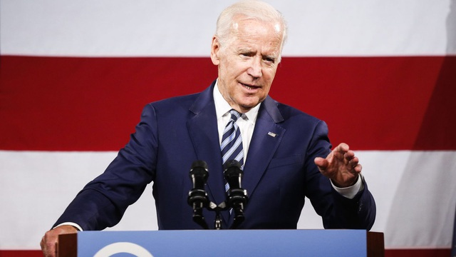
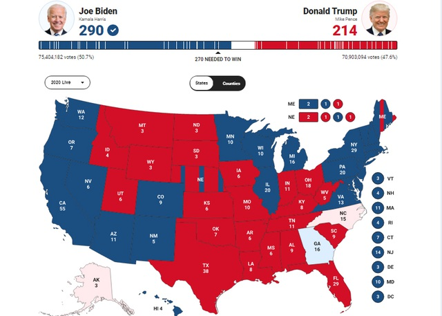

Dân trí Ứng viên đảng Dân chủ Joe Biden vẫn chưa được tiếp cận thông tin tình báo mật về an ninh quốc gia dù ông đã tuyên bố đắc cử tổng thống Mỹ.
Ứng viên tổng thống đảng Dân chủ Joe Biden (Ảnh: Reuters)
Một trong những đặc quyền đầu tiên mà một ứng viên tổng thống c ó được sau khi giành chiến thắng trong cuộc bầu cử Mỹ là được tiếp cận các báo cáo tình báo tối mật về các vấn đề an ninh quốc gia cấp bách. Đây cũng là những báo cáo mà tổng thống đương nhiệm được tiếp nhận hàng ngày.
Tuy nhiên, do Cơ quan Dịch vụ Tổng hợp Mỹ (GSA) vẫn chưa ký văn bản kích hoạt quá trình chuyển giao quyền lực cho ông Joe Biden, nên ứng viên tổng thống đảng Dân chủ và các cố vấn cấp cao của ông vẫn chưa nhận được báo cáo trên.
“Văn phòng Giám đốc Cơ quan Tình báo Quốc gia (ODNI) tuân thủ hướng dẫn pháp lý được quy định tại Đạo luật Chuyển tiếp Tổng thống, trong đó yêu cầu ứng viên tổng thống phải được GSA công nhận trước khi hỗ trợ quá trình chuyển giao quyền lực. ODNI sẽ không tiếp xúc với bất kỳ nhóm chuyển giao quyền lực nào cho tới khi được GSA thông báo”, CNN dẫn thông báo của ODNI ngày 9/11 cho biết.
Theo luật, sau khi một tổng thống đắc cử, người đứng đầu GSA sẽ phải ký giấy tờ để chính thức phân bổ ngân sách hàng triệu USD cho đội ngũ chuyển giao quyền lực của chính quyền mới, nhằm cho phép kích hoạt quá trình chuyển giao. Việc lãnh đạo GSA chần chừ trong việc kích hoạt có thể dẫn tới quá trình chuyển giao quyền lực cho ông Biden bị muộn.
Phe Dân chủ bày tỏ sự giận dữ khi lãnh đạo GSA không ký giấy tờ cần thiết. Trong khi đó, một nhóm lưỡng đảng gồm các quan chức dưới thời các cựu tổng thống Barack Obama, George W. Bush và Bill Clinton ngày 8/11 kêu gọi chính quyền Trump “ngay lập tức bắt đầu quá trình chuyển giao hậu bầu cử”.
Mặc dù ông Biden đã tuyên bố đắc cử tổng thống, song ông Trump và đội ngũ tranh cử vẫn không công nhận kết quả này. Tổng thống đương nhiệm cáo buộc bầu cử gian lận và sẵn sàng theo đuổi cuộc chiến pháp lý.
Tính toán của Fox News cho thấy ông Biden giành 290 phiếu đại cử tri, trong khi ông Trump giành 214 phiếu.